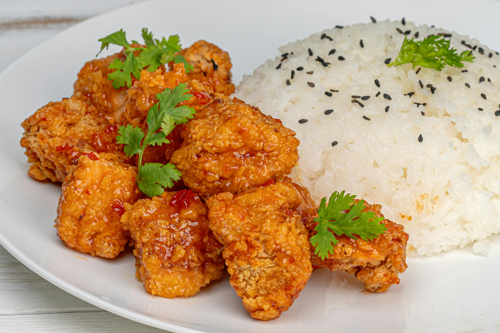

Chinese Orange Chicken

Everyone loves some good takeout every now
and then, but sometimes eating out can get expensive.
Thats why Odin Recipes has provied this
amazing Chinese Orange Chicken Recipe.
Chicken
- 4 Boneless Skinless Chicken Breasts cut into bite-size Pieces
- 3 Eggs Whisked
- 1/3 cup Cornstarch
- 1/3 Cup Flower
- Salt
- Oil for frying
Orange Chicken Sauce
- cup Orange Juice
- 1/2 cup Sugar
- Tablespoons Rice Vinegar or White Vinegar
- 2 Tablespoons Soy Sauce use tamari for a gluten-free dish
- 1/4 teaspoon Ginger
- 1/4 teaspoon Garlic Powder or 2 garlic cloves,finely dice
- 1/2 teaspoon Red Chilli Flakes
- Orange Zest from one Orange
- 1 Tablespoon Cornstarch
Garnish
Steps
Orange Sauce
- In a medium pot, add orange juice,
sugar, vinegar, soy sauce, ginger,
garlic, and red chili flakes.
Heat for 3 minutes.
- In a small bowl, whisk 1 Tablespoon
of cornstarch with 2 Tablespoons of
water to form a paste. Add to orange
sauce and whisk together. Continue
to cook for 5 minutes, until the
mixture begins to thicken. Once the
sauce is thickened, remove from heat
and add orange zest.
Chicken
- Place flour and cornstarch in a
shallow dish or pie plate. Add a
generous pinch of salt. Stir.
- Whisk eggs in shallow dish.
- Dip chicken pieces in egg mixture and
then flour mixture. Place on plate.
- Heat 2 - 3 inches of oil in a heavy-bottomed
pot over medium-high heat. Using a thermometer,
watch for it to reach 350 degrees.
- Working in batches, cook several
chicken pieces at a time.
Cook for 2 - 3 minutes,
turning often until golden brown.
Place chicken on a paper-towel-lined
plate. Repeat.
- Toss chicken with orange sauce.
You may reserve some of the sauce to place on rice. Serve it with a
sprinkling of green onion and orange zest, if
so desired.
Home